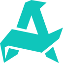
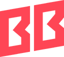

Dota 2BLAST Slam VIII
 Team Spirit1
Team Spirit1
 Tundra Esports0
Tundra Esports0
Карта 2 24:15
Вторник, 6 октября · 38 матчей в 5 играх · время московское
5 в эфире21 скоро12 завершены
Dota 2BLAST Slam VIII
Team Spirit1
Tundra Esports0
Карта 2 24:15
Dota 2BLAST Slam VIII
Gaimin Gladiators0
 PARIVISION1
PARIVISION1
Пауза 6 мин
CS2ESL Pro League S24
VITTeam Vitality1
MGZThe MongolZ0
Карта 2 Mirage · 7:5
CS2ESL Pro League S24
G2G2 Esports1
FZFaZe Clan1
Перерыв карта 3 через 4 мин
LoLWorlds 2026
T1T10
GENGen.G0
Драфт карта 1
Dota 2BLAST Slam VIII · Плей-офф · Bo3матч ›
☠PREODDSLIVEVAL
Aurora—53%1.77——
BetBoom Team—47%2.00——Завершён13:40
 Pure · Aurora14 / 2 / 11
Pure · Aurora14 / 2 / 11Dota 2BLAST Slam VIII · Плей-офф · Bo3матч ›
☠PREODDSLIVEVALTeam Spirit1852%1.811.45+4%
Tundra Esports1248%1.962.45—
ИдётКарта 2 · 24:15


 Yatoroтвой игрок+12.4
Yatoroтвой игрок+12.4Dota 2BLAST Slam VIII · Плей-офф · Bo3матч ›
☠PREODDSLIVEVAL Gaimin Gladiators1847%2.001.60+2%PARIVISION1253%1.772.21—
Пауза6 мин
Техническая пауза: у Gaimin Gladiators отвалился игрок, ждут переподключенияобычно до 10 минут
Техническая пауза: у Gaimin Gladiators отвалился игрок, ждут переподключения
Dota 2BLAST Slam VIII · Плей-офф · Bo3матч ›
☠PREODDSLIVEVAL Team Falcons—52%1.81—— Team Liquid—48%1.96—+6%Запланирован17:00
4 из 5
2 из 5
3 : 2в пользу Team Falcons
последняя — 2:1, 12 сен
2 : 031% голосов
2 140 проголосовали
CS2ESL Pro League S24 · Группа C · Bo3матч ›
☠PREODDSLIVEVAL VITTeam Vitality756%1.681.34— MGZThe MongolZ544%2.142.68+6%ИдётКарта 2 · Mirage · 7:5
64%Team Vitality36%
Ancient · выбор The MongolZкто возьмёт — тот выиграет
CS2ESL Pro League S24 · Группа C · Bo3матч ›
☠PREODDSLIVEVAL G2G2 Esports1365%1.451.16— FZFaZe Clan1135%2.693.36+2%Перерывкарта 3 через 4 мин
64%G2 Esports36%
Ancient · выбор FaZe Clanкто возьмёт — тот выиграет
CS2ESL Pro League S24 · Группа C · Bo3матч ›
☠PREODDSLIVEVAL NAVINatus Vincere—56%1.68—+2% MZMOUZ—44%2.14——Задержан15:50
Сдвинули на 15:50Задержан на 50 минут: предыдущий матч на этом сервере затянулся до третьей карты
NAVI4 из 5
MZ2 из 5
2 : 031% голосов
2 140 проголосовали
Задержан на 50 минут: предыдущий матч на этом сервере затянулся до третьей карты
LoLWorlds 2026 · Швейцарка, раунд 3 · Bo1матч ›
☠PREODDSLIVEVAL T1T1—62%1.521.52+2% GENGen.G—38%2.472.47—Драфткарта 1
T1: Azir, Lee Sin, выбирает…Gen.G: Orianna, Vi
58%голоса42%
LoLWorlds 2026 · Швейцарка, раунд 3 · Bo1матч ›
☠PREODDSLIVEVAL FNCFnatic—52%1.81—— BLGBilibili Gaming—48%1.96—+6%Запланирован19:00
FNC4 из 5
BLG2 из 5
3 : 2в пользу Fnatic
последняя — 2:1, 12 сен
2 : 031% голосов
2 140 проголосовали
ValorantVCT Champions 2026 · Плей-офф · Bo3матч ›
☠PREODDSLIVEVAL PRXPaper Rex—60%1.57—— LOUDLOUD—40%2.35——Завершён12:55
Карты, счёт и игрок матча спрятаны, чтобы не испортить запись
Pure · Paper Rex14 / 2 / 11ValorantVCT Champions 2026 · Плей-офф · Bo3матч ›
☠PREODDSLIVEVAL NRGNRG—61%1.54—— EDGEDward Gaming—39%2.41——Перенесён8 окт, 12:00
Перенесён на 8 окт, 12:00Перенесён организатором: у EDward Gaming задержали визы. Уведомим, если время снова сдвинут
NRG4 из 5
EDG2 из 5
2 : 031% голосов
2 140 проголосовали
Перенесён организатором: у EDward Gaming задержали визы. Уведомим, если время снова сдвинут
MLBBMPL Indonesia S18 · Регулярный сезон · Bo3матч ›
☠PREODDSLIVEVAL ONONIC—58%1.62—— EVEVOS—42%2.24—+3%Запланирован20:00
ON4 из 5
EV2 из 5
3 : 2в пользу ONIC
последняя — 2:1, 12 сен
2 : 031% голосов
2 140 проголосовали
MLBBMPL Indonesia S18 · Регулярный сезон · Bo3матч ›
☠PREODDSLIVEVAL RRQRRQ Hoshi————— AEAlter Ego—————Отменён—
Отменён: Alter Ego снялись с сезона. Победа присуждена RRQ Hoshi
Dota 2EPL World Series SEA S18 · Плей-офф · Bo3матч ›
☠PREODDSLIVEVAL Yangon Galacticos—51%1.84—— XIPXipto Esports—49%1.92—+5%Запланирован21:00
4 из 5
XIP2 из 5
3 : 2в пользу Yangon Galacticos
последняя — 2:1, 12 сен
2 : 031% голосов
2 140 проголосовали
Dota 2EPL World Series SEA S18 · Плей-офф · Bo3матч ›
☠PREODDSLIVEVAL IVRIvory—67%1.40—— Yangon Galacticos—33%2.85—+3%Запланирован23:30
IVR4 из 5
2 из 5
3 : 2в пользу Ivory
последняя — 2:1, 12 сен
2 : 031% голосов
2 140 проголосовали
Dota 2BLAST Slam VIII · Плей-офф · Bo3матч ›
☠PREODDSLIVEVALTeam Spirit—54%1.74—+2%
Team Falcons—46%2.04——
Запланирован14:00
4 из 5
2 из 5
3 : 2в пользу Team Spirit
последняя — 2:1, 12 сен
2 : 031% голосов
2 140 проголосовали
CS2ESL Pro League S24 · Группа C · Bo3матч ›
☠PREODDSLIVEVAL VITTeam Vitality—65%1.45—+5% NAVINatus Vincere—35%2.69——Запланирован16:30
VIT4 из 5
NAVI2 из 5
3 : 2в пользу Team Vitality
последняя — 2:1, 12 сен
2 : 031% голосов
2 140 проголосовали